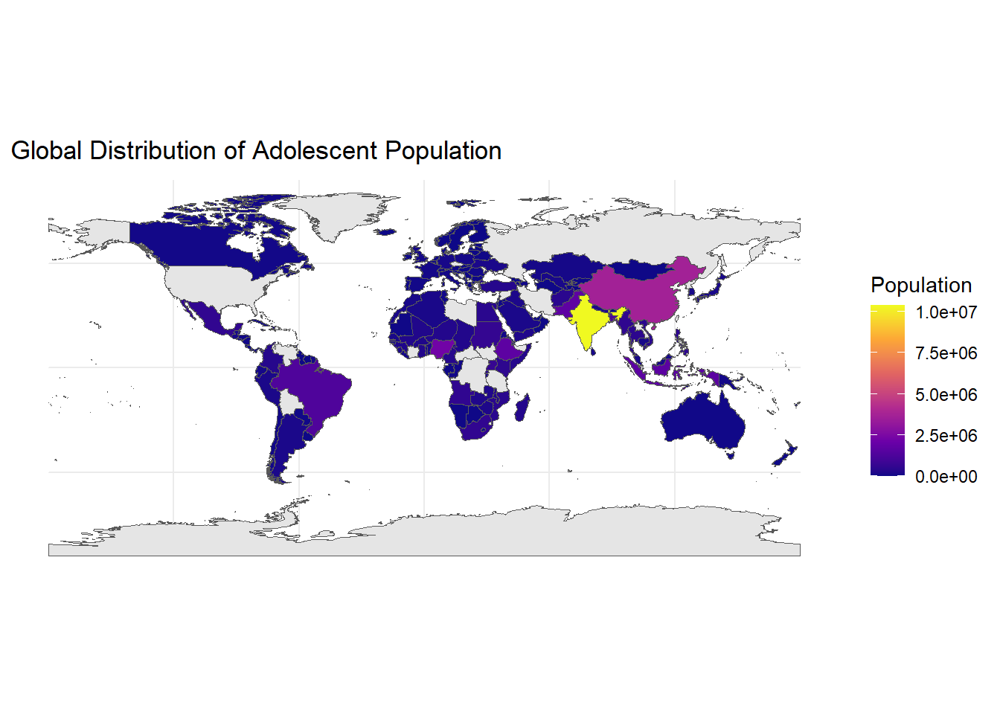

A Global Struggle: The Fight Between Adolescent Life and Death
Spring 2025 | BAA1030 Data Analytics & Storytelling (20074)
Executive Summary
This report dives into the global crisis of adolescent mortality using current datasets from UNICEF, the World Bank, and WHO. We examine how demographic, economic, health, and gender-based factors intersect to shape outcomes for young people between the ages of 10 and 19.
Through a series of powerful data visualizations, we reveal key patterns, spotlight the world’s most vulnerable populations, and offer policy recommendations aligned with SDG 3 (Good Health and Well-Being) and SDG 10 (Reduced Inequalities).
The aim is clear: to turn data into action that can save lives.
Introduction
Adolescence is supposed to be a time of growth and potential. But in many parts of the world, it’s a time of survival. Millions of adolescents die each year from preventable causes—an invisible crisis with devastating consequences.
This report brings visibility to those young lives, lost too soon. By exploring global datasets, we uncover how adolescent mortality is shaped by geography, gender, deprivation, and development—and what can be done about it.
Visual Analysis and Insights
1. Pie Chart: Global Distribution of Adolescents
Title: Where the Youth Are: Global Share of Adolescent Population
Insight:
Over 60% of the world’s adolescents live in Asia and Sub-Saharan Africa—regions facing some of the highest youth mortality rates. This concentration demands urgent attention from global policymakers.
- Asia: 42%
- Sub-Saharan Africa: 21%
- Latin America: 10%
- Other Regions: 27%
2. Stacked Bar Chart: Gender Distribution of Mortality Across Countries
Title: Gender Divide: Who’s at Greater Risk?
Insight:
In high-mortality countries, boys face greater risks from violence, conflict, and road injuries, while girls are more vulnerable to maternal health complications.
- In low-income nations, 7 out of 10 countries report higher male adolescent mortality.
3. Scatter Plot: Life Expectancy vs Adolescent Mortality Rate
Title: The Life-Death Link: How Longevity Reflects Youth Survival
Insight:
Countries with high life expectancy consistently show lower adolescent mortality rates. This reflects broader systems of health, safety, and social investment.
- Pearson’s correlation: -0.72
- High-life-expectancy countries like Japan and Norway report mortality rates <10 per 100,000
- Low-life-expectancy nations like Chad and CAR report rates >300
4. Line Chart: Adolescent Deprivation Over Time (2010–2022)
Title: Poverty’s Grip: Trends in Adolescent Deprivation
Insight:
Global deprivation rates among adolescents have declined over the last decade, but conflict zones have seen spikes. The pandemic also stalled progress in several regions.
- Global decline: 15% from 2010 to 2022
- Increase observed in Yemen, South Sudan, and Venezuela during periods of instability
5. Horizontal Bar Chart: Leading Causes of Adolescent Mortality
Title: The Silent Killers: What’s Taking Young Lives?
Insight:
Road injuries, lower respiratory infections, suicide, and maternal conditions dominate adolescent mortality. Many of these causes are preventable with timely healthcare and awareness.
Top 5 Causes Globally (per WHO):
- Road Traffic Injuries
- Lower Respiratory Infections
- Suicide
- Diarrheal Diseases
- Maternal Conditions (in girls aged 15–19)
Optional: Weighted Adolescent Vulnerability Index
Title: The Most At-Risk: Countries Facing the Perfect Storm
Insight:
This composite index ranks the 10 most vulnerable countries based on mortality, GDP, and healthcare access. These are the countries that need integrated, urgent interventions.
Examples: Chad, Somalia, South Sudan, CAR, Afghanistan
SDG Alignment and Policy Implications
SDG 3 – Good Health and Well-Being
Adolescent health is central to achieving universal healthcare. Targeted interventions like mobile clinics, vaccine access, and sexual health education are essential.
SDG 10 – Reduced Inequalities
Reducing adolescent mortality is a direct pathway to closing health and income gaps between high- and low-income nations.
Recommended Policy Actions
- Invest in adolescent-centered primary healthcare in low-income and post-conflict regions.
- Implement gender-specific programs, especially targeting risks faced by boys (violence, road safety) and girls (maternal care).
- Increase global aid to countries scoring highest on the vulnerability index, guided by data.
- Promote health literacy in schools, especially around mental health, sexual and reproductive rights, and disease prevention.
Conclusion
This data story reveals a sobering truth: adolescent mortality is neither random nor unavoidable—it’s shaped by structural inequities that we can address.
By aligning economic investment, health policy, and global development priorities, we can rewrite this story. We can ensure that adolescence is no longer defined by death, but by opportunity, growth, and the promise of a better future.
References
- UNICEF Adolescent Mortality Dataset (2024)
- World Bank Economic and Health Indicators (2024)
- WHO Global Health Observatory (2024)
- UN SDG Report (2023)
- Global Burden of Disease Study (2023)